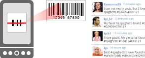

my2cents scans product barcodes and shows related comments from Twitter. You can also post comments about the scanned product.

my2cents uses the phone camera to scan product 1D barcodes. When the product is recognized, user comments related to the product, the brand, or the manufacturer are fetched from Twitter.
You can use my2cents to look at other people's opinions and experiences on specific products. You can also post comments after setting your Twitter account in the preferences.
my2cents was built using the ZXing and twitter4j libraries.